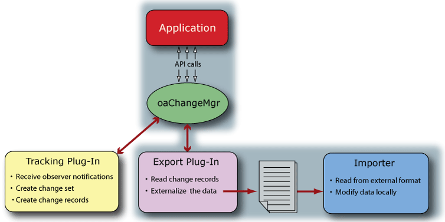

|
 |
 |
||||||
|
|
|
||||||
An application can create an importer (or import plug-in) to accept input from a CMS export plug-in. The importer should verify that the design changes provided by the export plug-in are valid before applying them to the design.
An importer must be implemented to accept the output of a particular target exporter. The importer can be written as a plug-in or can be implemented in any way that best suits the needs of the application.

For an overview of the CMS system, refer to Change Management System (CMS) in the Programmers Guide.
Return to Programmers Guide topics

Copyright © 2001-2010 Cadence Design Systems, Inc.
All rights reserved.